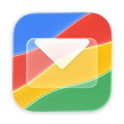

Refract Mail
A native Mac app for Gmail, built for people with more than one Google account.
Private beta · macOS 26 Tahoe or later · Apple silicon and Intel
What it does
- Profiles for your accountsGroup your Google accounts — work, personal, a side project — into profiles, and switch between them with one click. Read one account at a time, or all of a profile's accounts together.
- Your inbox, the way Gmail sorts itPrimary, Social, Promotions, Updates and Forums, beside Sent, Starred, Drafts, Archive, Spam and Trash — with unread counts, always one click away.
- Conversations, not messagesWhole threads in one view, with your contacts' photos. Remote images stay blocked until you choose to load them.
- Cleaner linksTracking parameters are stripped and click-tracking redirects unwrapped before a link opens, and the bottom bar shows where a link really goes.
- Write in MarkdownBold, lists, quotes, headings and code blocks as you type, sent as ordinary formatted email. Attachments, drafts that sync with Gmail, and Undo Send.
- Fast and localMail is kept on your Mac, so it opens instantly and your actions apply at once, then sync with Gmail. Labels, Gmail search operators and keyboard shortcuts included.
Private by design
Refract Mail talks to Google directly from your Mac. There is no Refract Mail server: your mail, your contacts and your sign-in never pass through us, and the app collects nothing about how you use it — no analytics, no tracking, no ads.
Your mail is kept on your Mac inside the app's sandbox, and your Google sign-in in the macOS Keychain. The app is signed with a Developer ID and notarized by Apple.
How Refract Mail uses your Google data
When you add an account, Google asks you to allow these permissions. Each one exists for a feature you use, and the data stays on your Mac:
| Permission | What Refract Mail does with it |
|---|---|
| Read, compose, send and organize your Gmail | Shows your mail, and sends, archives, labels, marks and moves messages to Trash when you ask it to. |
| Manage your Gmail labels | Shows your labels as tags, and creates a label when you add one. |
| Gmail basic settings | Reads your send-as addresses and signatures for writing mail. |
| Your contacts and other contacts (read-only) | Suggests recipients as you type, and shows senders' photos. |
| Your name, email address and profile picture | Identifies which Google account is signed in. |
Refract Mail's use and transfer to any other app of information received from Google APIs will adhere to the Google API Services User Data Policy, including the Limited Use requirements. The privacy policy has the details.
Questions
Refract Mail is in private beta. For questions, bug reports or access, open an issue on GitHub.